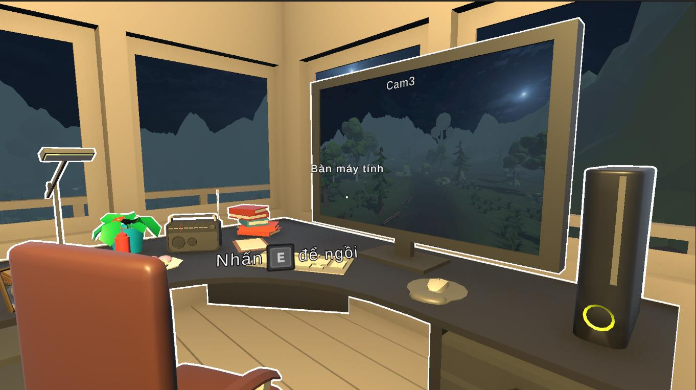

You Hear That?
A first-person psychological horror game with Utility AI, CCTV surveillance and branching dialogue.
Technical documentation and the playable Windows build are available in the case study.
UNITY DEVELOPER / GAMEPLAY PROGRAMMER
Information Technology graduate with experience building Unity gameplay systems and software applications.

A first-person psychological horror game with Utility AI, CCTV surveillance and branching dialogue.
Technical documentation and the playable Windows build are available in the case study.
Interactive weather map with geospatial data queries and layered geographic information.
Database-backed chatbot application integrating API services and product-related data.
Unity 6, C#, Utility AI, NavMesh, Ink, Render Texture
Python, JavaScript, PHP, SQL
Git, GitHub, Visual Studio, Unity Profiler
B.Sc. in Information Technology from Thuy Loi University (2026). Developed You Hear That? as a solo graduation project. Previously worked as a Backend Developer Intern at Hi1 (Feb–May 2025).
For opportunities or project inquiries.